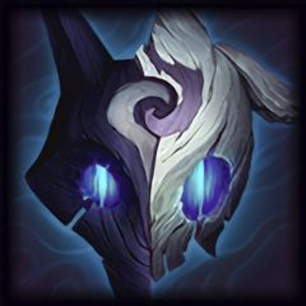
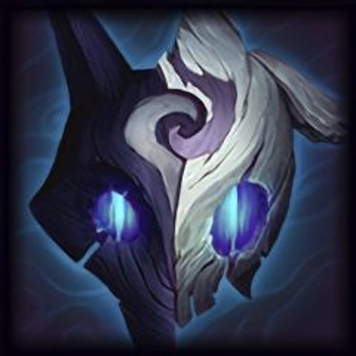

Distintos, mas nunca separados, os Kindred representam as essências gêmeas da morte. O arco da Ovelha propicia uma rápida transição do mundo mortal para aqueles que aceitam seu destino. O Lobo caça aqueles que fogem de seu fim, entregando-lhes a violência derradeira de suas presas esmagadoras. Embora diferentes interpretações sobre a natureza dos Kindred circulem por toda Runeterra, todo mortal deve escolher a verdadeira face de sua morte.
 

Distintos, mas nunca separados, os Kindred representam as essências gêmeas da morte. O arco da Ovelha oferece um desprendimento rápido do mundo mortal para aqueles que aceitam seu destino. O Lobo caça aqueles que fogem de seu fim, entregando-lhes a violência derradeira de suas presas esmagadoras. Embora interpretações diferentes da natureza dos Kindred variem por toda Runeterra, todo mortal deve escolher a verdadeira face de sua morte.
Os Kindred são o envolvimento branco do nada e a perfuraçãao dos dentes no escuro. Criador e Destruidor, poeta e primitivo; são um e são ambos. Quando pegos no limite da vida, soando mais alto do que o som de qualquer trombeta, está a pulsação martelante das gargantas que chama os Kindred à sua caça. Levante-se e cumprimente o arco prateado da Ovelha para que suas flechas lhe derrubem rapidamente. Caso a recuse, o Lobo fará de você sua alegre caça, em que cada perseguição leva ao fim brutal.
Os Kindred existem em Valoran desde que as pessoas reconhecem a morte. Quando chega a hora final, dizem que um demaciano de verdade ficará de frente para a Ovelha, recebendo a flecha, enquanto o Lobo lidera a caçada pelas ruas de Noxus. Nas neves de Freljord, antes ir à luta, algumas tribos "beijam o Lobo", honrando sua caçada com o sangue dos inimigos. Após cada Tormento, a cidade das Águas de Sentina se junta para celebrar os sobreviventes e honrar aqueles que receberam a verdadeira morte da Ovelha e do Lobo.
Negar os Kindred é o mesmo que negar a ordem natural das coisas. Foram poucos os capazes de iludir esses caçadores. Essa fuga perversa não é um santuário, pois nela existe apenas um pesadelo ambulante. Os Kindred aguardam aqueles presos às Ilhas das Sombras, pois sabem que tudo eventualmente sucumbirá às flechas da Ovelha ou aos dentes do Lobo.
A aparição mais antiga dos caçadores eternos vem de um par de máscaras antigas, feitas por mãos desconhecidas nos túmulos de pessoas há muito tempo esquecidas. Contudo, até hoje, a Ovelha e o Lobo permanecem juntos, e sempre serão os Kindred.